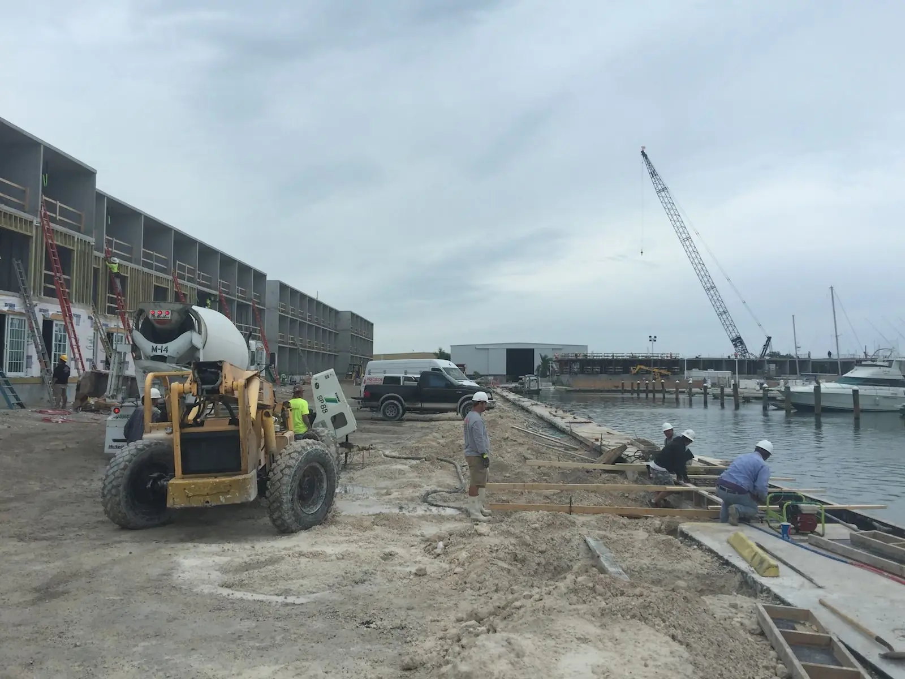

Government & public works
Public works, built by people who live here.
Road, utility, drainage and waterfront repairs for Florida Keys municipalities, Monroe County, state agencies and prime contractors — delivered by a family-owned contractor based at the center of the island chain.
Why it matters here
One road in. Forty-two bridges. No detours.
In the Florida Keys, infrastructure isn’t abstract. The Overseas Highway is the only road in or out, and a washed-out shoulder, a failing culvert or a broken water main can affect an entire island. Public owners need a contractor who can mobilize fast, work cleanly in a sensitive marine environment, and get it right the first time.
That’s what we’ve done for private clients across the Keys since 1968. Our public works practice brings the same crews, the same equipment know-how and the same family accountability to roads, utilities, drainage and public waterfronts.
Capabilities
Built for the work public owners need most.
From a single curb ramp to a multi-block drainage repair, we self-perform the core work and manage the details — permits, maintenance of traffic, inspections and restoration.
Roadway & Asphalt Repair
Pavement and shoulder repairs that keep the only road in and out moving.
- Pothole & base failure repair
- Asphalt patching & overlays
- Shoulder & edge rebuilds
- Storm washout restoration
Sidewalks, Curb & ADA
Concrete flatwork that’s safe, smooth and accessible to every pedestrian.
- Sidewalk replacement
- Curb & gutter
- ADA curb ramps & detectable warnings
- Driveway aprons & crossings
Stormwater & Drainage
Drainage improvements that move water off roads and away from homes.
- Catch basins & inlets
- Exfiltration trenches
- Culvert & pipe replacement
- Swales & regrading
Utility Repair & Restoration
Underground repairs and clean, compacted, properly restored surfaces.
- Water & sewer line repair
- Trenching, backfill & compaction
- Utility cut restoration
- Conduit & duct bank installation
Bridges, Culverts & Structural Concrete
The spall, pile and pile cap repairs we perform on marine structures — applied to public infrastructure.
- Concrete spall repair
- Pile jackets & wraps
- Pile cap & bent replacement
- Railing & barrier repair
Seawalls & Public Waterfronts
Shoreline protection and public water access built for the marine environment.
- Seawall construction & repair
- Rip-rap & shoreline stabilization
- Boat ramps & public docks
- Fishing piers & kayak launches
Emergency & Storm Response
When a storm comes through, our crews are already here.
- Rapid mobilization from Marathon
- Emergency shoring & stabilization
- Seawall & roadway washout repair
- Post-storm structural repairs
Public Facilities
Repairs and upgrades for parks, schools and municipal buildings.
- ADA accessibility upgrades
- Foundations & structural repair
- Stairs, ramps & walkways
- Park & waterfront structures
Why a local contractor
The advantage of a contractor who lives here.
Mainland contractors bid the Keys and then discover the logistics: one highway, long hauls, tight sites and a marine sanctuary on every side. We solved those problems a long time ago.
Coral dots mark featured project sites, from Stock Island (MM 5) to Duck Key (MM 61).
Centered on the chain
Marathon sits near the midpoint of the Keys — roughly 50 miles from both Key West and Key Largo — so our crews can reach any site in the Keys the same day.
Accountable leadership
Family owned since 1968. The people who sign the contract are the people on the job site, and they’re easy to reach.
Sensitive-environment experience
Decades of in-water and shoreline work alongside seagrass, mangroves and reef, with turbidity barriers and protected-species precautions.
Hurricane-tested know-how
We live through every storm season here. We know how Keys infrastructure fails — and how to rebuild it stronger.
Logistics, solved
Every load of material comes down one highway. We plan deliveries, staging and equipment for tight island sites and short work windows.
A local workforce
Local crews mean less travel time, fewer mobilization costs and public dollars that stay in the Keys economy.
How we deliver
Five mile markers from bid to closeout.
- MILE1
Bid & award
Responsive bids with clear pricing, qualifications, references and the insurance and bonding documents the solicitation requires.
- MILE2
Preconstruction
Submittals, schedules, utility locates and coordination with the owner, engineer of record and inspectors.
- MILE3
Permits & MOT
Permits in hand, maintenance of traffic set up and environmental controls in place before work begins.
- MILE4
Build & inspect
Family-supervised crews, daily reporting and inspections at every hold point.
- MILE5
Closeout
Punch list, as-built documentation and final paperwork — delivered complete.
Ready for public contracting requirements
We understand that public work is as much about documentation and compliance as it is about construction.
- Work to FDOT Standard Specifications & local agency standards
- Maintenance of traffic (MOT) planning & setup
- Certified payroll & prevailing-wage reporting when required
- Bid, performance & payment bonds as required
- Jobsite safety program & daily inspections
- Erosion, sediment & turbidity control
- Protected-species precautions for in-water work
- Licensed & insured in the State of Florida
Ways to work with us
Hard-bid projects
Invitations to bid for defined scopes, priced competitively and delivered as specified.
Quotes & small purchases
Fast, straightforward pricing for smaller repairs and maintenance work.
Continuing & term contracts
On-call repair and maintenance under annual or multi-year agreements.
Prime & subcontract
We bid directly or team with primes who need a dependable local partner.
Who we serve
Ready to support the agencies that keep the Keys running.
From city public works departments to state agencies and the prime contractors who serve them, we’re equipped to support public owners throughout Monroe County.
Listed for reference only; inclusion doesn’t imply a current contract or endorsement.
- Monroe County
- City of Marathon
- City of Key West
- Islamorada, Village of Islands
- City of Key Colony Beach
- City of Layton
- Florida Department of Transportation
- Florida Keys Aqueduct Authority
- Electric & utility providers
- School district & public facilities
- Federal facilities in the Keys
- Prime contractors & design-build teams
Relevant experience
Proven on the same scopes public work demands.


Company data
Capability at a glance.
Company snapshot
- Legal name
- Coral Construction Company
- Established
- 1968
- Ownership
- Family owned & operated
- Headquarters
- 347 Aviation Blvd, Marathon, FL 33050
- Mailing
- PO Box 500582, Marathon, FL 33050
- Service area
- Florida Keys · Monroe County
- Phone
- (305) 394-0747
NAICS codes
237310Highway, Street & Bridge Construction237110Water & Sewer Line and Related Structures Construction237990Other Heavy & Civil Engineering Construction (marine construction)238110Poured Concrete Foundation & Structure Contractors236220Commercial & Institutional Building Construction236118Residential Remodelers
Core competencies
- Roadway, sidewalk & drainage repair
- Utility repair & restoration
- Structural & marine concrete repair
- Seawalls, docks & public waterfronts
- Emergency & storm response
FAQ
Questions from public owners.
Do you work as a prime contractor or a subcontractor?
Both. We bid directly to public owners, and we partner with prime contractors and design-build teams that need a dependable local partner in the Keys.
How quickly can you mobilize?
We’re based in Marathon, near the center of the island chain, so we can typically reach any site in the Keys the same day. For urgent work, call the office directly at (305) 394-0747.
What documentation can you provide with a bid?
Proof of licensure and insurance, references, project history, our capability statement and the bonds your solicitation requires. Tell us what your procurement office needs and we’ll get it to you.
What size projects do you take on?
From single-day repairs and small purchase orders to multi-month construction projects. If you’re not sure whether a scope is a fit, call us — we’ll give you a straight answer.
How do we add Coral Construction to our bidders list?
Send your solicitation, vendor registration details or plan-holder information through our contact form or to office@coralconstructioncompany.com, and we’ll respond with the documents you need.
Start a project
Have a solicitation or an urgent repair?
Send us the bid documents, a scope of work or just a description of the problem. We’ll respond promptly with questions, pricing or the paperwork your procurement office needs.